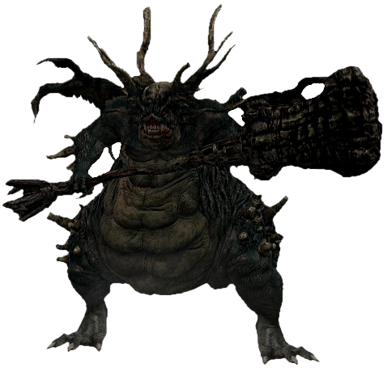

REFUGIO
Demonio del refugio
Localizacion:Refugio de los no muertos
Suelta:Gran martillo demonio, Llave gran peregrino, Humanidad
Salud:NJ:813, NJ+:2.195
Almas:NJ:2.000, NJ+:10.000
Descripcion
Un demonio menor que custodia el Refugio de los no muertos, evitando que los prisioneros escapen. Este es el primer jefe que el jugador encuentra en el juego.
Lore
El Demonio del Refugio era un demonio que probablemente fue creado cuando la Bruja de Izalith intentó duplicar la Primera Llama usando un Alma de Señor. El intento no tuvo éxito y accidentalmente creó al Lecho del Caos, la madre y fuente de todos los demonios. El Demonio del Refugio era un demonio menor, y tras su creación empezó a residir en el Refugio de los no muertos norte. La gigantesca prisión fue diseñada para mantener a los no muertos alejados del resto del mundo, y era especialmente difícil escapar de ella. Cuando el No muerto elegido intentó escapar de la prisión, se encontró con el Demonio del Refugio, el cual le impidió salir por el portón del salón principal. Se las arregló para escapar de la ira del demonio, luego regresó y lo derrotó para adquirir la Llave gran peregrino con la que logró huir del refugio.
Localizacion
Se encuentra en el Refugio de los no muertos, tras pasar a través de las enormes puertas inmediatamente después de la primera hoguera. El demonio bajará hacia la habitación, dando comienzo al combate.
Estrategia
El primer encuentro con el Demonio del Refugio es opcional, y para jugadores que estén en su primera partida, es altamente recomendable huir de la habitación para evitar la lucha. Sin embargo, si el jugador ha obtenido las bombas de fuego como regalo inicial, pueden usarse para derrotar al demonio rápidamente. Una táctica bastante útil es permanecer justo detrás del demonio y alejarse cuando vuela hacia arriba. Se recomienda usar la empuñadura de espada recta como escudo, ya que es capaz de detener cierta cantidad de daño. El segundo encuentro es obligatorio, pero el jugador puede lograr una gran ventaja si realiza un ataque en caída desde la plataforma que se encuentra por encima del jefe. Esto acabará con aproximadamente 1/4 de la salud del demonio, dependiendo del arma utilizada. Blandir el arma a dos manos incrementará el daño infligido. El demonio destruirá la plataforma si el jugador tarda demasiado en actuar.
Drops
Gran martillo demonio: 100% de probabilidad(solo en el primer encuentro)
Llave gran peregrino: 100% de probabilidad(solo despues de hablar con Oscar)
Humanidad: 100% de probabilidad
Curiosidades
- Es posible huir del Demonio del Refugio en el primer encuentro, pasando a través de la puerta en el lado izquierdo de la habitación.
- Al igual que el Sabio del fuego demoníaco, el Demonio del Refugio comparte su canción de jefe con el Demonio de Tauro.